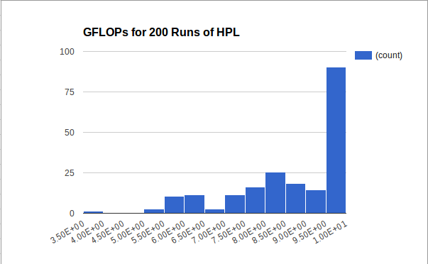

Tyler H. Chang
Argonne National Laboratory,
MCS Division
About me:
I am a Postdoc at Argonne National Laboratory working with Stefan Wild in the Mathematics and Computer Science (MCS) Division. I received my Ph.D. in Computer Science from Virginia Tech in 2020, where my thesis was Mathematical Software for Multiobjective Optimization Problems.
My current research interests include optimization, approximation theory, computational geometry, algorithms, and parallel computing, for applications in scientific computing, data science, and engineering.
Specifically, some of my work has included:
- Multiobjective Optimization of computationally expensive blackbox simulations;
- efficiently computing Delaunay Triangulations in medium to high dimensions;
- Interpolation of high-dimensional blackbox functions;
- and producing high quality, portable Mathematical Software (both serial and parallel).
I am particularly passionate about producing open source scientific software. Check out some of my Projects below or on my GitHub, and don't hesitate to reach out if you have questions, comments, or feedback!


Projects:
ParMOO
 The multiobjective optimization problem (MOP) is a generalization of
the single objective optimization problem.
Instead of attempting to minimize a single cost or loss function,
a MOP attempts to balance the tradeoff between multiple, potentially
conflicting criteria.
The solution to a MOP is a set of nondominated points describing the
tradeoff between the conflicting objectives, called the Pareto front.
In a multiobjective simulation optimization problem, the cost
functions are derived from computationally expensive numerical simulations.
Example applications include
aerospace design engineering,
material and drug manufacturing,
and particle accelerator design.
The multiobjective optimization problem (MOP) is a generalization of
the single objective optimization problem.
Instead of attempting to minimize a single cost or loss function,
a MOP attempts to balance the tradeoff between multiple, potentially
conflicting criteria.
The solution to a MOP is a set of nondominated points describing the
tradeoff between the conflicting objectives, called the Pareto front.
In a multiobjective simulation optimization problem, the cost
functions are derived from computationally expensive numerical simulations.
Example applications include
aerospace design engineering,
material and drug manufacturing,
and particle accelerator design.
ParMOO is a Python framework for solving multiobjective simulation optimization problems, by exploiting the underlying structure of the simulation. In order to achieve scalability on extreme-scale hardware, ParMOO layers over the libEnsemble library.
- Check back soon! We expect to release in the next few months!
DELAUNAYSPARSE
 The Delaunay triangulation is a well-studied simplicial mesh, widely
considered optimal for interpolation applications.
Delaunay triangulations have recently garnered some interest in the
machine learning community, for their interpretability in the context
of regression and classification problems.
Unfortunately, the "curse of dimensionality" manifests in the
size of the Delaunay triangulation, making it uncomputable for
high-dimensional big data problems.
The Delaunay triangulation is a well-studied simplicial mesh, widely
considered optimal for interpolation applications.
Delaunay triangulations have recently garnered some interest in the
machine learning community, for their interpretability in the context
of regression and classification problems.
Unfortunately, the "curse of dimensionality" manifests in the
size of the Delaunay triangulation, making it uncomputable for
high-dimensional big data problems.
DELAUNAYSPARSE is an open source Fortran package that computes sparse subsets of the complete Delaunay triangulation, as needed to perform interpolation. The resulting codebase is fast, robust, and portable; and features both serial and parallel implementations. Interfaces are available for usage as a Fortran library, C/C++ library, Python module, or from the command line.
- Webpage (including download links, getting started, and related publications)
- GitHub
- algorithm publication
- software publication
VTMOP
 VTMOP is a flexible open source Fortran package for solving generic MOPs;
see ParMOO (above) for a description of MOPs.
While many current MOP algorithms do not scale well for more than 2 or 3
objectives, VTMOP aims at approximating tradeoff curves between larger
numbers of objectives.
VTMOP is targeted at large scale multidisciplinary design optimization
problems, such as particle accelerator design optimization
and aerospace engineering design applications.
This work was partially funded by a DOE SCGSR award, in
collaboration with Argonne National Laboratory
(see Awards).
VTMOP is a flexible open source Fortran package for solving generic MOPs;
see ParMOO (above) for a description of MOPs.
While many current MOP algorithms do not scale well for more than 2 or 3
objectives, VTMOP aims at approximating tradeoff curves between larger
numbers of objectives.
VTMOP is targeted at large scale multidisciplinary design optimization
problems, such as particle accelerator design optimization
and aerospace engineering design applications.
This work was partially funded by a DOE SCGSR award, in
collaboration with Argonne National Laboratory
(see Awards).
VTMOP is currently under review for publication, and therefore not yet publicly available. However, a VTMOP plugin is currently available through the libEnsemble library.
- Check back soon! Our paper has been accepted, and the full release is forthcoming!
- libEnsemble interface (Python)
- algorithm publication
- software publication
- libEnsemble interface publication
VarSys
 The VarSys Project at Virginia Tech was a 4-year NSF-funded ( CISE CSR #1565314 and CISE CSR #1838271) study of performance variability. The project goals were to understand, model, and manage performance variability in HPC and Cloud systems. To study these goals, we investigated performance jitter using several common benchmark tools, such as the IOzone benchmark tool, for studying I/O throughput variability, and the High-Performance Linpack (HPL) benchmark solver, which is used to measure peak FLOPs by the HPC Top 500 list.
As a member of the math and algorithms team in the VarSys project, I designed and used software to model and manage performance variability. DELAUNAYSPARSE was used to model performance variability based on I/O throughput data that was gathered using the IOzone benchmark tool. VTMOP was used to manage the tradeoff between mean throughput and throughput variability when tuning the HPL benchmark solver. See the corresponding publications below.
- VarSys webpage
- Check back soon! Once VTMOP is released, code will follow to tune HPL for throughput variability and mean throughput!
- Using VTMOP to optimize performance variability of HPL
- Using DELAUNAYSPARSE to predict performance variability of IOzone benchmark
Quantum Annealing Math Library (QAML)
 Quantum annealing (QA) is an implementation of the general purpose
adiabatic quantum computing (AQC) model for quantum computing.
QA balances the theoretical properties of AQC against real-world
practicalities, allowing for faster progress in near-term QA hardware.
Quantum annealing (QA) is an implementation of the general purpose
adiabatic quantum computing (AQC) model for quantum computing.
QA balances the theoretical properties of AQC against real-world
practicalities, allowing for faster progress in near-term QA hardware.
QAML is an open source Python project, which embeds least squares and polynomial sum-of-squares problems (with real, integer, Boolean or mixed variables) on the D-Wave quantum annealer. These broad classes of problems are ubiquitous in scientific computing, machine learning, and data science.
Publications:
Selected Publications: (For full list, see my CV or my Google Scholar page)
Tyler H. Chang, Jeffrey Larson, and Layne T. Watson.
2020.
Multiobjective optimization of the variability of the high-performance
Linpack solver.
In Proc. 2020 Winter Simulation Conference (WSC 2020).
Virtual event, pp. 3081--3092.
 IEEE Xplore
BIB
SLIDES
IEEE Xplore
BIB
SLIDES
Tyler H. Chang, Layne T. Watson, Thomas C.H. Lux, Ali R. Butt, Kirk W. Cameron,
and Yili Hong.
2020.
Algorithm 1012: DELAUNAYSPARSE: Interpolation via a sparse subset of the
Delaunay triangulation in medium to high dimensions.
ACM Transactions on Mathematical Software 46(4), Article No. 38, 20 pages. ACM.
 ACM DL
BIB
ACM DL
BIB
Tyler H. Chang, Jeffrey Larson, Layne T. Watson, and Thomas C. H. Lux.
2020.
Managing computationally expensive blackbox multiobjective optimization
problems with libEnsemble.
In Proc. 2020 Spring Simulation Conference (SpringSim '20).
SCS, Fairfax, VA, USA, Article No. 31, 12 pages.
 ACM DL
BIB
SLIDES
ACM DL
BIB
SLIDES
Tyler H. Chang, Thomas C.H. Lux, and Sai Sindhura Tipirneni.
2019.
Least-squares solutions to polynomial systems of equations with quantum
annealing.
Quantum Information Processing 18(12), Article No. 374.
Springer.
 SpringerLink
BIB
SpringerLink
BIB
Tyler H. Chang, Layne T. Watson, Thomas C. H. Lux, Bo Li, Li Xu, Ali R. Butt,
Kirk W. Cameron, and Yili Hong.
2018.
A polynomial time algorithm for multivariate interpolation in arbitrary
dimension via the Delaunay triangulation.
In Proc. 2018 ACM Southeast Concerence (ACMSE '18).
ACM, Richmond, KY, USA, Article No. 12, 8 pages.
 ACM DL
BIB
SLIDES
ACM DL
BIB
SLIDES
In Press:
Tyler H. Chang, Layne T. Watson, Jeffrey Larson, William I. Thacker, Shubhangi Deshpande, and Thomas C.H. Lux.
2022.
Algorithm XXXX: VTMOP: Solver for blackbox multiobjective optimization problems.
To appear in ACM Transactions on Mathematical Software.
 ACM DL
BIB
ACM DL
BIB
Under Review:
Thomas C.H. Lux, Layne T. Watson, Tyler H. Chang, and William I. Thacker. Algorithm XXXX: MQSI---Monotone quintic spline interpolation. Under review with ACM Transactions on Mathematical Software (since August 2020).
Awards:
Nominee for Outstanding Dissertation Award(January 2021: Virginia Tech, Graduate School)
- In 2021, I was a finalist for Virginia Tech's graduate school wide Outstanding Dissertation Award
- I was nominated by the Dept. of Computer Science for my 2020 Ph.D. dissertation
(August 2016 - May 2020: Virginia Tech, Graduate School)
- The Cunningham Doctoral Fellowship is a Virginia Tech university-level fellowship.
- Guarantees 4 years of research funding to outstanding incoming doctoral students
(June 2019 - December 2019: US Dept. of Energy, Office of Science)
- Recipient of the US DOE, Office of Science Graduate Student Research Program
- One of 70 proposals funded during 2018 Solicitation 2 cycle
- Award funded a 6 mo. appointment (June - December 2019) at Argonne National Laboratory to develop VTMOP software (see Projects)
(2016 - 2020: Virginia Tech, College of Engineering)
- Supplemental awards given by Virginia Tech, College of Engineering
- Recipient of Davenport Leadership Fellowship for 2016-17 academic year and 2019-20 academic year
- Recipient of Pratt Fellowship for 2017-18 academic year and 2018-19 academic year